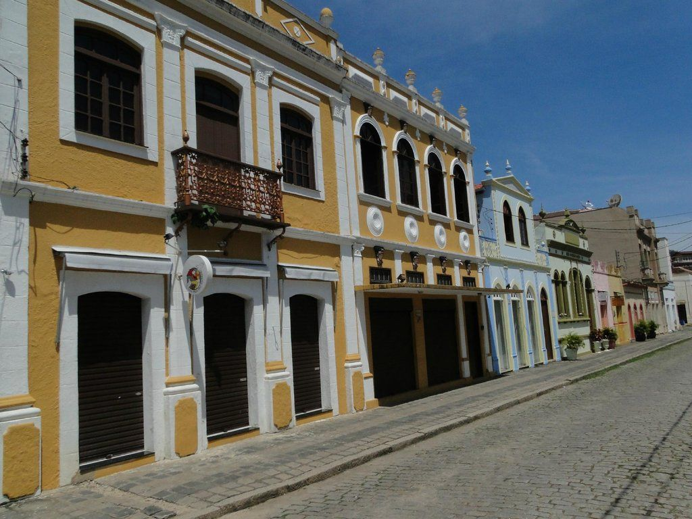
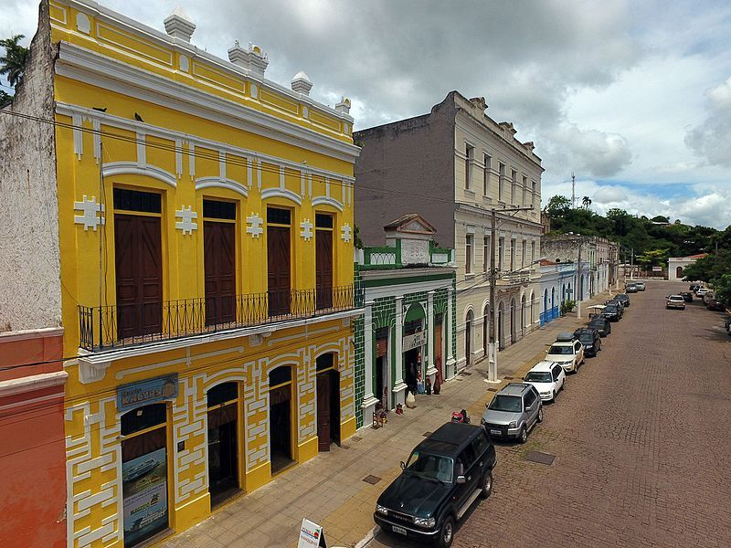
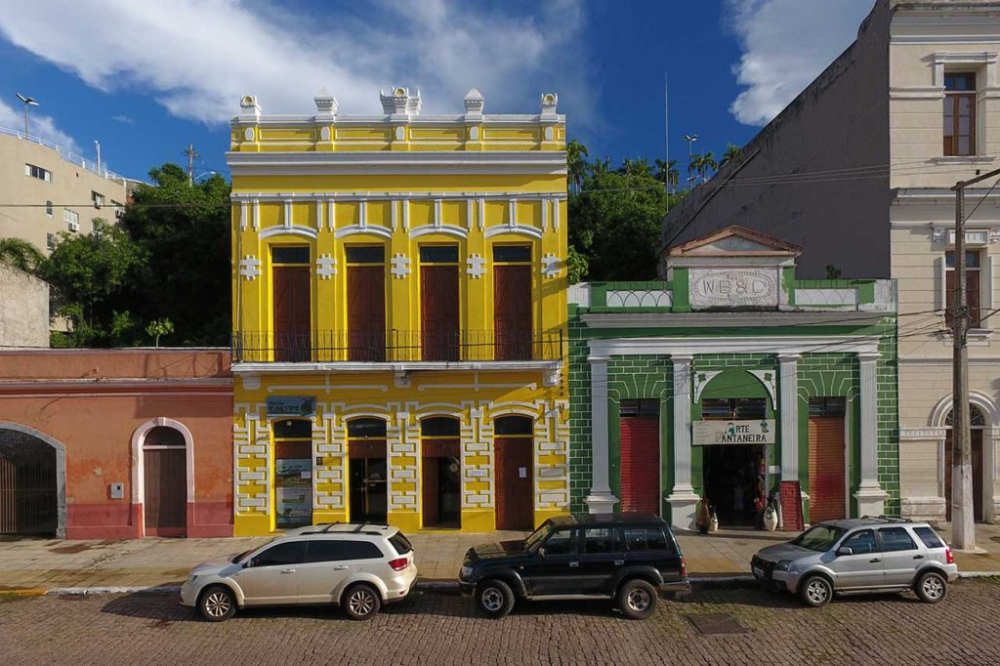

Construído em 1896, com projeto do arquiteto Martino Santa Lucci, o prédio da Alfândega desempenhou papel central no controle fiscal e na arrecadação de impostos sobre mercadorias.
Sua arquitetura apresenta influências do ecletismo e do neoclassicismo europeu, reforçando a imagem de Corumbá como cidade moderna e integrada ao comércio internacional.
Atualmente, o edifício abriga o Escritório Técnico do IPHAN, simbolizando a preservação do patrimônio histórico.
Fonte: IPHAN
